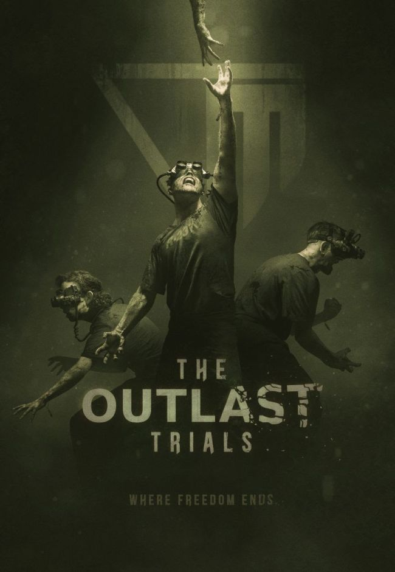

Gamer's News
The Outlast Trials is a 4-player survival horror set during the Cold War
Red Barrels' next Outlast game is a co-op horror romp, as Chris predicted when the studio teased it in October. The Outlast Trials isn't a direct follow-up of the earlier strictly singleplayer games, though it is set in the same spooky universe. As test subjects in a mystery Cold War experiment, players will be able to scare themselves stupid on their lonesome or work together with up to three unfortunate pals. It isn't clear what trials the experiment's victims will have to endure, but there is some art you can stare at below.
It looks like night vision goggles will be replacing the earlier games' camera, but for a moment I thought they might be VR headsets. They're obviously not, but Red Barrels hasn't announced platforms, or anything, really, so it could still have VR support. According to Red Barrels co-founder David Chateauneuf, the proof of concept is complete and the team is now in development mode. It's still very early days, then, and there's no release date. In the meantime, here's what we thought of the previous game, Outlast 2.
Where will Griffin’s 2019 League roster be playing in the upcoming season?
Griffin’s legendary roster split up for the LCK 2020 season, but the players aren’t done fighting.

Griffin is one of the most popular teams in the League of Legends Champions Korea league (LCK). And this isn’t because there’s a historical legacy behind it, but rather, because of how far the team climbed over the course of only two seasons.
The team only qualified for the LCK in 2018. But in the LCK, Griffin were a force to be reckoned with from the beginning. The team finished its first regular season in second place. With no roster changes, Griffin just kept improving. And this year, it resulted in winning the organization’s first presence at Worlds.
But the roster hasn’t had it easy. A number of issues regarding the players’ contracts and management surfaced to the public, so the players announced free agency as soon as they could. Being as skilled as they are, it was expected that they’d quickly get picked up by other LCK teams in case they decided not to stay with Griffin.
Credits go to: PCGamer and DOT ESports.
Upcoming Events
VRX conference & Expo
VRX 2019 (Dec 12-13, San Francisco) is gathering 600+ senior business executives across enterprise, entertainment, gaming, tech and investment, and putting customers at the heart of innovation. Join thought leaders from major growth verticals to discuss how VR & AR/MR can bring ROI and propel your business forward.
Upcoming Video Game Releases
Below we made a list for the first two months in of 2020 video game releases, the list will be continually updated.
- Yakuza: Like A Dragon (PlayStation 4) – January 16
- Dragon Ball Z: Kakarot (PlayStation 4, Xbox One, PC) – January 17
- Tokyo Mirage Sessions #FE (Switch) – January 17
- Mega Man Zero/ZX Legacy Collection (PlayStation 4, Xbox One, Switch, PC) – January 21
- Moons of Madness (PlayStation 4, Xbox One) – January 21
- Final Fantasy Crystal Chronicles Remastered Edition (PlayStation 4, Switch) – January 23
- Rugby 20 (PlayStation 4, Xbox One, PC) – January 23
- Journey to the Savage Planet (PlayStation 4, Xbox One, PC) – January 28
- Pillars of Eternity II: Deadfire (PlayStation 4, Xbox One) – January 28
- The Dark Crystal: Age of Resistance Tactics (PlayStation 4, Xbox One, Switch, PC, Mac) – February 4
- Zombie Army 4: Dead War (PlayStation 4, Xbox One, PC) – February 4
- Granblue Fantasy Versus (PlayStation 4) – February 6
- Ori And The Will Of The Wisps (Xbox One, PC) – February 11
- Street Fighter V Champion Edition (PlayStation 4, PC) – February 14
- Darksiders Genesis (PlayStation 4, Xbox One, Switch) – February 14
- Marvel's Iron Man VR (PlayStation VR) – February 28
- One Punch Man: A Hero Nobody Knows (PlayStation 4, Xbox One, PC) – February 28
Credits go to: GameInformer.